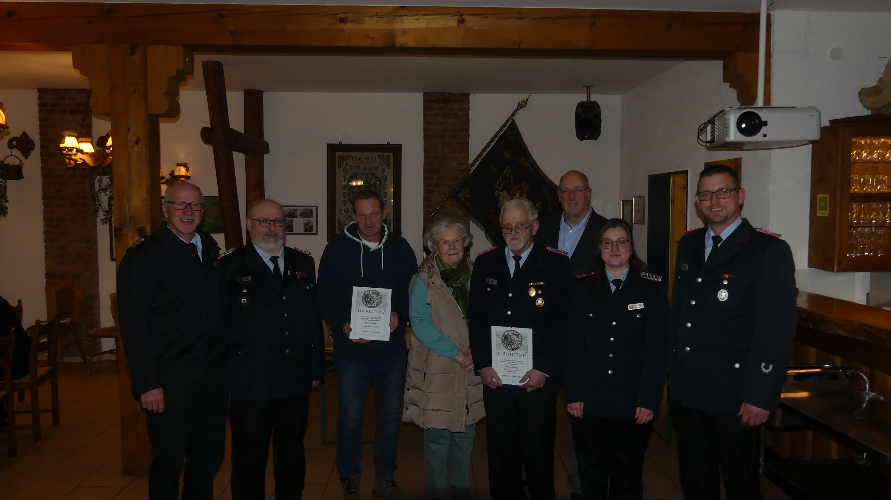

Jahreshauptversammlung: Generationenwechsel & 70 Jahre Treue
Am 21. Mai 2022 kam die Feuerwehr Reileifzen in der Gänsetränke zur Jahreshauptversammlung zusammen. Ortsbrandmeister Marco Eikhoff blickte auf eine herausfordernde Zeit zurück: Trotz der Corona-Bedingungen konnte die Dienstbereitschaft stets aufrechterhalten werden, wobei die Wehr in den Jahren 2020 und 2021 insgesamt zu neun Einsätzen ausrückte.
Ein emotionaler Höhepunkt war die Ehrung von Gerhard Grewe, der für seine stolze **70-jährige Mitgliedschaft** ausgezeichnet wurde – eine außergewöhnliche Treue zu unserer Wehr!

Neuwahlen und Beförderungen
Auch im Kommando gab es personelle Veränderungen: Während viele Amtsinhaber bestätigt wurden, reichten Gruppenführer Jens Klages und sein Stellvertreter Marcel Eikhoff auf eigenen Wunsch den Staffelstab weiter. Neu in das Amt gewählt wurden Jasmin Bergmeier als Gruppenführerin und Domenik Schünemann als ihr Stellvertreter.
Darüber hinaus gab es weiteren Grund zur Freude: Jasmin Bergmeier wurde zur Löschmeisterin befördert, Michael Kuhnt für 40 Jahre Mitgliedschaft geehrt und Martin Eikhoff unter großem Applaus einstimmig zum Ehrenmitglied ernannt.